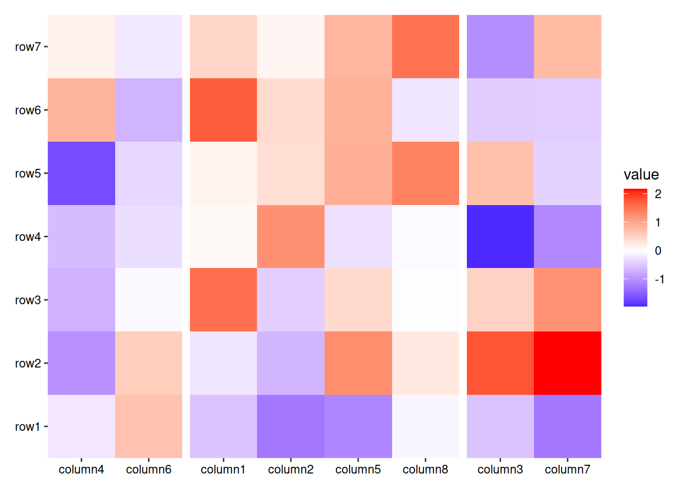
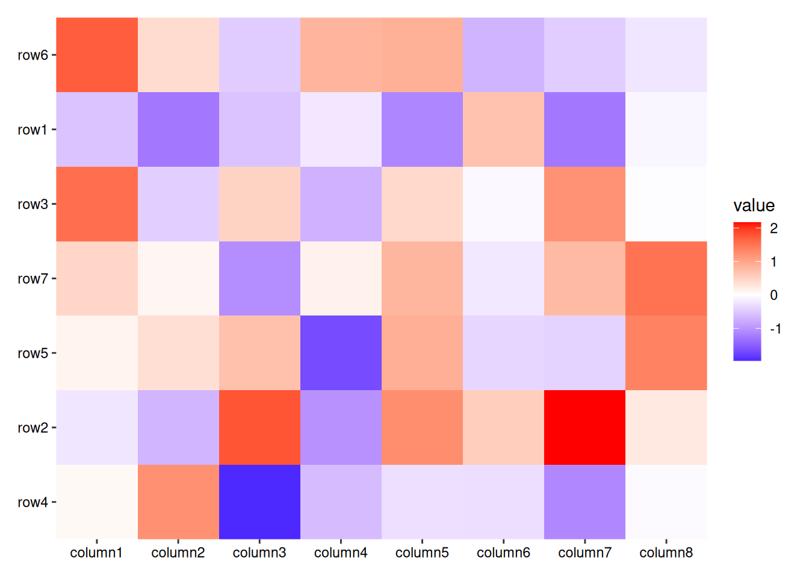
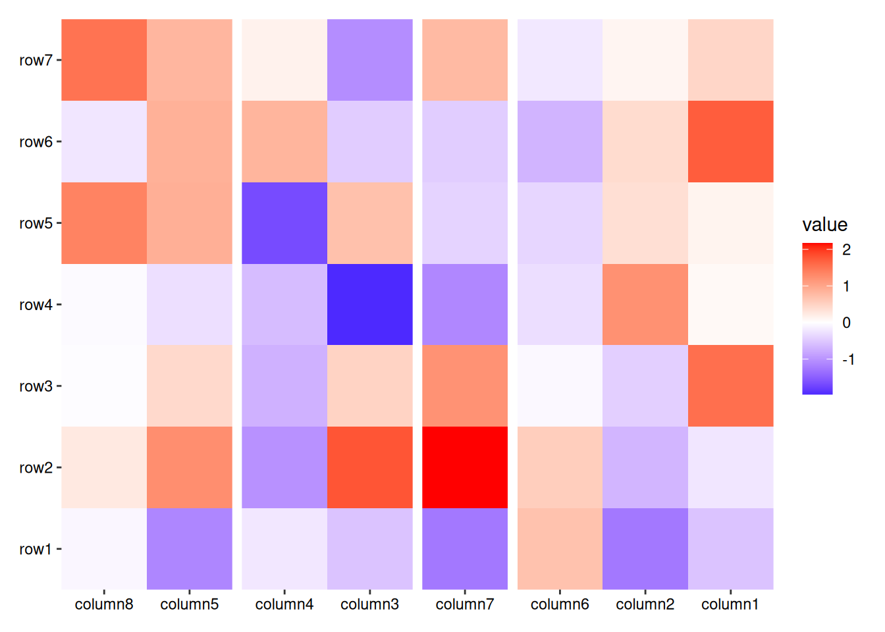
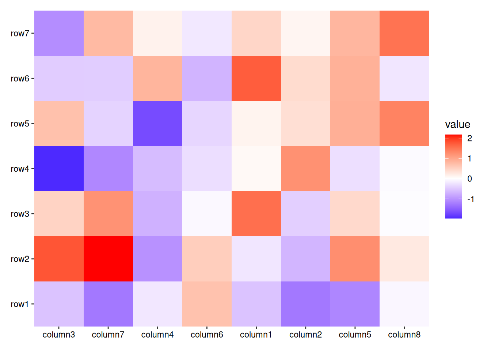
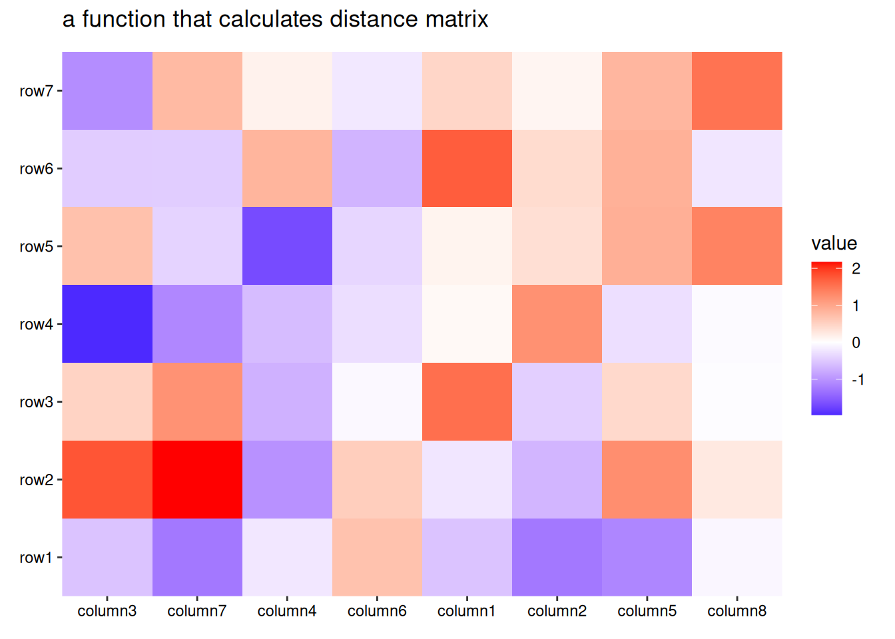
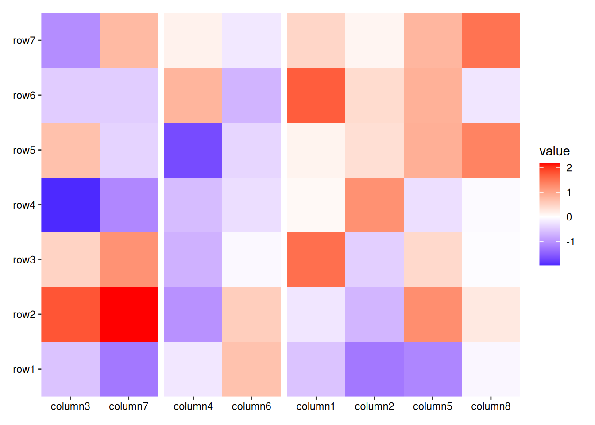
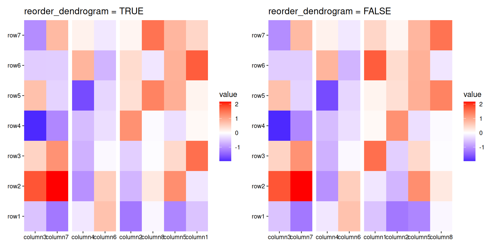

8 Customize Layout
For layouts that can align observations, the package provides a suite of align_* functions designed to give you precise control over the observations. These functions allow you to reorder observations or partition them into multiple groups.
Currently, there are four key align_* functions available for layout customization:
-
align_group: Group and align plots based on categorical factors. -
align_kmeans: Group observations by k-means clustering results. -
align_order: Reorder layout observations based on statistical weights or allows for manual reordering based on user-defined ordering index. -
align_order2: Reorder observations using an arbitrary statistical function. -
align_hclust: Reorder or group observations based on hierarchical clustering.
Note that these functions do not add plot areas and set the active context, meaning you cannot incorporate ggplot2 elements directly into these objects. You can inspect the behavior of any align_* function by printing it.
8.1 align_group()
The align_group() function allows you to split the observations into groups.
set.seed(1234)
ggheatmap(small_mat) +
anno_top() +
align_group(sample(letters[1:4], ncol(small_mat), replace = TRUE))
#> → heatmap built with `geom_tile()`Note that all align_* functions which split observations into groups must not break the previous established groups. This means the new groups must nest in the old groups, usually they cannot be used if groups already exist.
set.seed(1234)
ggheatmap(small_mat) +
anno_top() +
align_group(sample(letters[1:4], ncol(small_mat), replace = TRUE)) +
align_group(sample(letters[1:5], ncol(small_mat), replace = TRUE))
#> Error in `setup_domain()`:
#> ! `align_group()` disrupt the previously established panel groups of the
#> top annotation `stack_discrete()`
8.2 align_kmeans()
The align_kmeans() function split the observations into groups based on k-means clustering.
set.seed(1234)
ggheatmap(small_mat) +
anno_top() +
align_kmeans(3L)
#> → heatmap built with `geom_tile()`
8.3 align_order()
The align_order() function reorder the observations based on the summary weights.
In this example, we order the rows based on their means. By default, the ordering is in ascending order according to the summary weights. You can reverse the order by setting reverse = TRUE.
ggheatmap(small_mat) +
anno_left() +
align_order(rowMeans) +
layout_title(title = "reverse = FALSE")
#> → heatmap built with `geom_tile()`ggheatmap(small_mat) +
anno_left() +
align_order(rowMeans, reverse = TRUE) +
layout_title(title = "reverse = TRUE")
#> → heatmap built with `geom_tile()`Additionally, you can provide the ordering integer index or character index directly:
ggheatmap(small_mat) +
anno_left() +
align_order(my_order)
#> → heatmap built with `geom_tile()`
ggheatmap(small_mat) +
anno_left() +
align_order(rownames(small_mat)[my_order])
#> → heatmap built with `geom_tile()`
Some align_* functions also accept a data argument. It’s important to note that all align_* functions treat rows as the observations. This means NROW(data) must match the number of observations along the axis used for alignment. The data argument can also accept a function (supporting purrr-like lambda syntax), which will be applied to the layout matrix.
As mentioned in Section 6.4, for top and bottom annotations, the data matrix of quad_layout()/ggheatmap() is transposed to create the annotation stack_layout(). Therefore, you can use rowMeans() to calculate the mean value across all columns.
ggheatmap(small_mat) +
anno_top() +
align_order(rowMeans)
#> → heatmap built with `geom_tile()`Some align_* functions that reorder observations include an argument called strict. This argument is especially useful when previous groups have already been established. If previous groups have been created and strict = FALSE, the function will reorder the observations within each group.
set.seed(1234)
ggheatmap(small_mat) +
anno_top() +
align_group(sample(letters[1:4], ncol(small_mat), replace = TRUE))+
align_order(rowMeans, strict = FALSE)
#> → heatmap built with `geom_tile()`
Note that we always prevent reordering the observations into two different orderings. If you want to apply two different orderings, you should use cross_layout() instead, which I’ll introduce in a later chapter:
set.seed(1234)
another_order <- sample(ncol(small_mat))
ggheatmap(small_mat) +
anno_top() +
align_order(rowMeans) +
align_order(another_order)
#> Error in `setup_domain()`:
#> ! `align_order()` disrupt the previously established ordering index of
#> the top annotation `stack_discrete()`
8.4 align_hclust()
The align_hclust() function is designed to reorder observations and group them based on hierarchical clustering. Unlike align_dendro(), align_hclust() does not add a dendrogram tree to the plot. All the arguments intruduced here can also be used by align_dendro().
ggheatmap(small_mat) +
anno_top() +
align_hclust()
#> → heatmap built with `geom_tile()`
Hierarchical clustering is performed in two steps: calculate the distance matrix and apply clustering. You can use the distance and method argument to control the builind process.
There are two ways to specify distance metric for clustering:
- specify
distanceas a pre-defined option. The valid values are the supported methods indist()function and coorelation coefficient"pearson","spearman"and"kendall". The correlation distance is defined as1 - cor(x, y, method = distance). - a self-defined function which calculates distance from a matrix.
ggheatmap(small_mat) +
anno_top() +
align_hclust(distance = "pearson") +
layout_title("pre-defined distance method (1 - pearson)")
#> → heatmap built with `geom_tile()`ggheatmap(small_mat) +
anno_top() +
align_hclust(distance = function(m) dist(m)) +
layout_title("a function that calculates distance matrix")
#> → heatmap built with `geom_tile()`
Method to perform hierarchical clustering can be specified by method. Possible methods are those supported in hclust() function. And you can also provide a self-defined function, which accepts the distance object and return a hclust object.
ggheatmap(small_mat) +
anno_top() +
align_hclust(method = "ward.D2")
#> → heatmap built with `geom_tile()`You can specify k or h to split observations into groups, which work similarly to cutree():
ggheatmap(small_mat) +
anno_top() +
align_hclust(k = 3L)
#> → heatmap built with `geom_tile()`
You can reorder the dendrogram based on the mean values of the observations by setting reorder_dendrogram = TRUE.
h1 <- ggheatmap(small_mat) +
ggtitle("reorder_dendrogram = TRUE") +
anno_top() +
align_hclust(k = 3, reorder_dendrogram = TRUE)
h2 <- ggheatmap(small_mat) +
ggtitle("reorder_dendrogram = FALSE") +
anno_top() +
align_hclust(k = 3)
align_plots(h1, h2)
#> → heatmap built with `geom_tile()`
#> → heatmap built with `geom_tile()`
In this example, we use align_plots() to arrange the layouts, which functions similarly to cowplot::align_plots() and patchwork::wrap_plots(). However, unlike those, align_plots() can be directly used with quad_layout() and stack_layout(), ensuring proper alignment by plot panel. Additionally, align_plots() can align pheatmap and ComplexHeatmap objects, though they won’t align by panel area in the same way as ggplot2 plots.
align_hclust() can also perform clustering between groups, meaning it can be used even if there are existing groups present in the layout, in this way, you cannot specify k or h:
set.seed(3L)
column_groups <- sample(letters[1:3], ncol(small_mat), replace = TRUE)
ggheatmap(small_mat) +
anno_top() +
align_group(column_groups) +
align_hclust()
#> → heatmap built with `geom_tile()`You can reorder the groups by setting reorder_group = TRUE, which reorders the hierarchical clusters based on the group tree:
ggheatmap(small_mat) +
anno_top() +
align_group(column_groups) +
align_hclust(reorder_group = TRUE)
#> → heatmap built with `geom_tile()`
If you specify k or h, this will always turn off sub-clustering. The same principle applies to align_hclust(), where new groups must be nested within the previously established groups.
ggheatmap(small_mat) +
anno_top() +
align_group(column_groups) +
align_hclust(k = 2L)
#> Error in `setup_domain()`:
#> ! `align_hclust()` disrupt the previously established panel groups of
#> the top annotation `stack_discrete()`
8.5 align_order2()
The align_order2() function enables the reordering of observations based on a specified statistical function. This function accepts a data argument and computes a statistic that determines the new ordering of the observations. The resulting order is extracted using the order2() function.
Foe example, you can also use hierarchical clustering to reorder the observations like this:
ggheatmap(small_mat) +
anno_left() +
align_order2(hclust2)
#> → heatmap built with `geom_tile()`Here, hclust2() is a special function used by align_hclust() to calculate the distance matrix and perform hierarchical clustering.
In addition to hierarchical clustering, the align_order2() function can also handle objects from the seriation package. For example, you can use the seriate() function with a method like "BEA_TSP" to reorder the observations based on a specific seriation algorithm:
ggheatmap(small_mat) +
anno_left() +
align_order2(seriation::seriate, method = "BEA_TSP", data = abs)
#> → heatmap built with `geom_tile()`This approach gives you the flexibility to apply different statistical or algorithmic methods for reordering observations, which can be especially useful for exploring complex patterns in data.
With the align_* functions in place, we’ve covered how to reorder and group observations within a layout. Now, having set the stage for proper observation alignment, we can move on to the next essential step: plot initialize. In the following chapter, we’ll dive deeper into how to set up your plots within the layout.